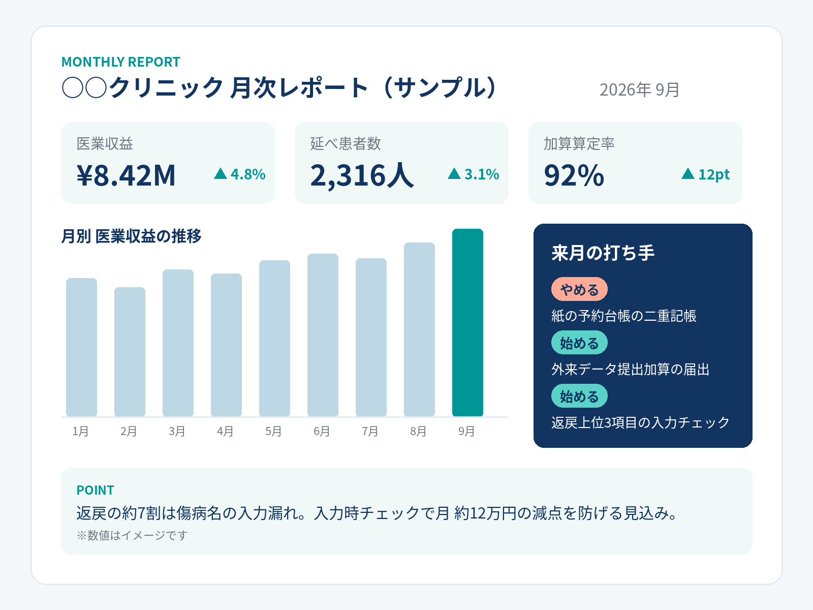

査定・返戻の分析
800件超
約2年分・800件超の査定・返戻を分析し、防げた減点を特定（約7割が傷病名の入力漏れ）。

150院以上
電子カルテ導入支援
800件超
査定・返戻の分析
約3日→約3時間
データ提出加算の試行データ作成（約680名分・エラーゼロ）
レセコンにある数字は、請求のためだけに使われています
次に何をやめて何を始めるかが、勘と経験に頼っています
取れるはずの加算の取りこぼしに、気づけない
話すだけで、手順書ができる。
属人化をほどく
算定ミスと取りこぼしを、入力の時点で防ぐ。取りに行くべき加算を、実際に取る。
積み上がった数字が、経営の判断材料になる。
新しいシステムを買っていただく必要はありません。今お使いのExcel・Word・PDFのままです。
毎月の売上・患者数・実績を1枚にまとめ、報告だけで終わらせません。『来月これをやめて、これを始めましょう』までお出しします。
BEFORE → AFTERBEFORE
AFTER
査定・返戻の分析
800件超
約2年分・800件超の査定・返戻を分析し、防げた減点を特定（約7割が傷病名の入力漏れ）。
外来データ提出加算
約3時間手作業なら約3日
外来データ提出加算の試行データ（約680名分）を、仕組み化して約3時間で作成（手作業なら約3日）。エラーゼロで提出・合格。

まずは、今いちばん時間がかかっている業務を1つ。それだけ聞かせてください。